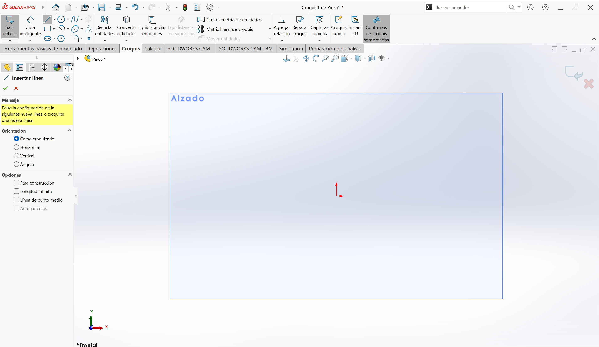
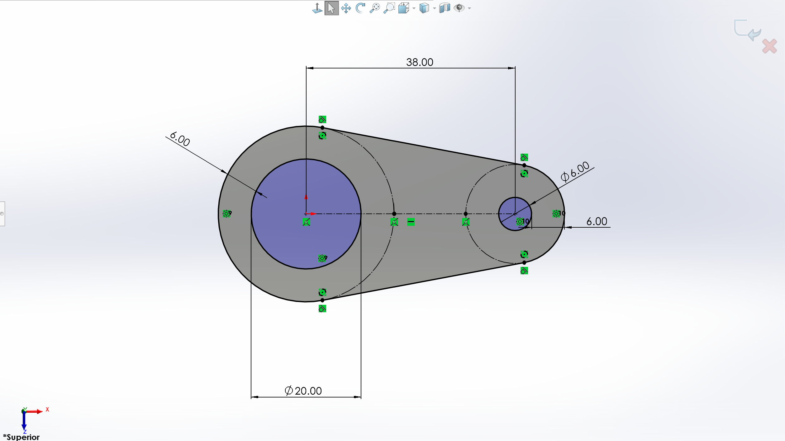
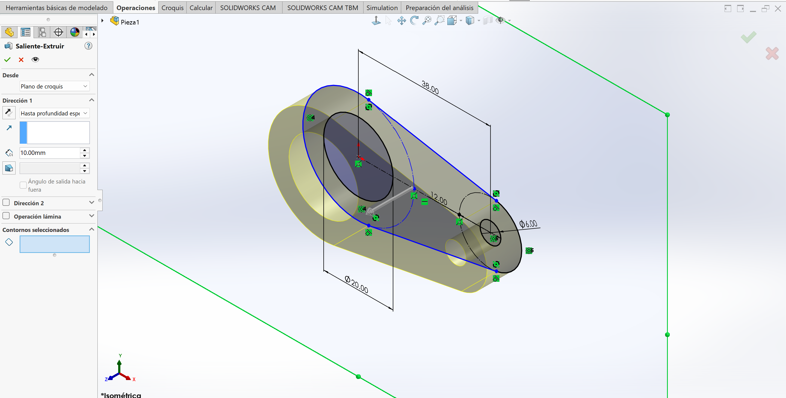
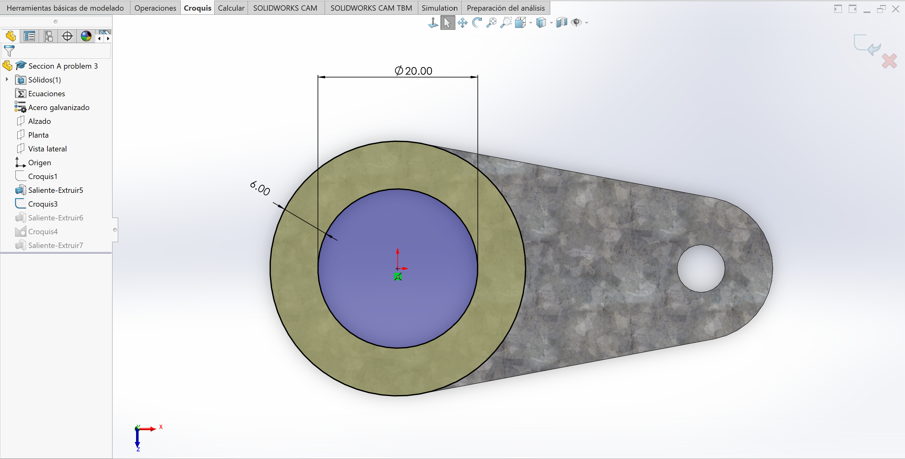
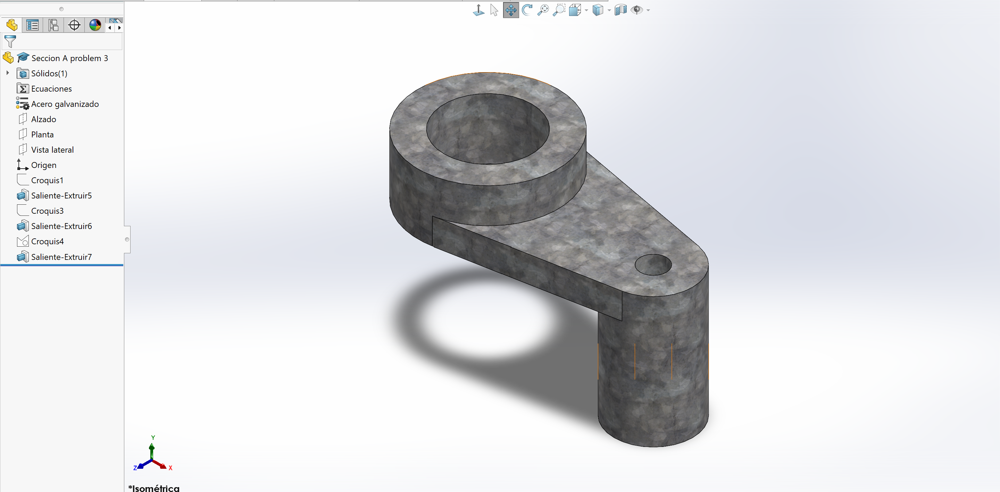

Inicios en SolidWorks
En esta sesión aprendimos los fundamentos del dibujo digital en SolidWorks, desde la selección del plano inicial hasta la creación de operaciones de extrusión y corte
1. Selección del Plano y Creación de Croquis
Para comenzar cualquier pieza , el primer paso es definir sobre qué vista vamos a trabajar (Alzado, Planta o Vista lateral)
- Práctica común: Seleccionar el plano Alzado para dibujar el perfil frontal principal de la figura
- Una vez elegido el plano, abrimos la herramienta Croquis para trazar las líneas base

2. Restricciones y Cotas Inteligentes
Durante el trazado de líneas, es indispensable definir completamente la geometría para garantizar precisión:
- Relaciones de posición (íconos verdes): Permiten fijar líneas de forma Horizontal, Vertical, Tangente entre otros
- Cota Inteligente: Herramienta utilizada para asignar dimensiones exactas a los bordes o diámetros
- Estado del Croquis:
- Líneas Azules: Insuficientemente definido (se puede deformar)
- Líneas Negras: Completamente definido (todas las dimensiones están fijas)

3. Generación del Sólido 3D (Extruir)
Una vez que el perfil 2D está cerrado y bien definido en el croquis, cambiamos a la pestaña de Operaciones:
- Seleccionamos la herramienta Saliente/Extruir
- Asignamos la profundidad requerida según el plano técnico
- Aceptamos la operación para generar el sólido

4. Edición del Modelo: Cortes
Para añadir o quitar material sobre un cuerpo ya existente:
- Hacemos clic en una cara plana del sólido o seleccionamos un nuevo plano
- Creamos un nuevo Croquis en esa superficie
- Dibujamos la figura requerida (por ejemplo, un círculo)
- Usamos las herramientas de Operaciones:
- Extruir Corte: Para quitar o perforar el material
- Saliente/Extruir: Para añadir material o nuevas secciones

